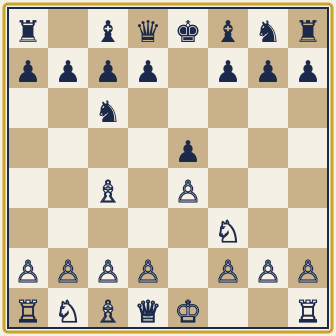

1. e4 e5 2. Nf3 Nc6 3. Bc4
The Italian Game is one of the oldest recorded openings and still one of the best for new players. White develops the knight and bishop quickly, aims the bishop at the weak f7 square, and fights for the center with the e4 pawn.
- Develops pieces toward the center in the first three moves.
- The bishop on c4 eyes the f7 square, a common target early in the game.
- Leads to open, tactical positions that are great for learning patterns.